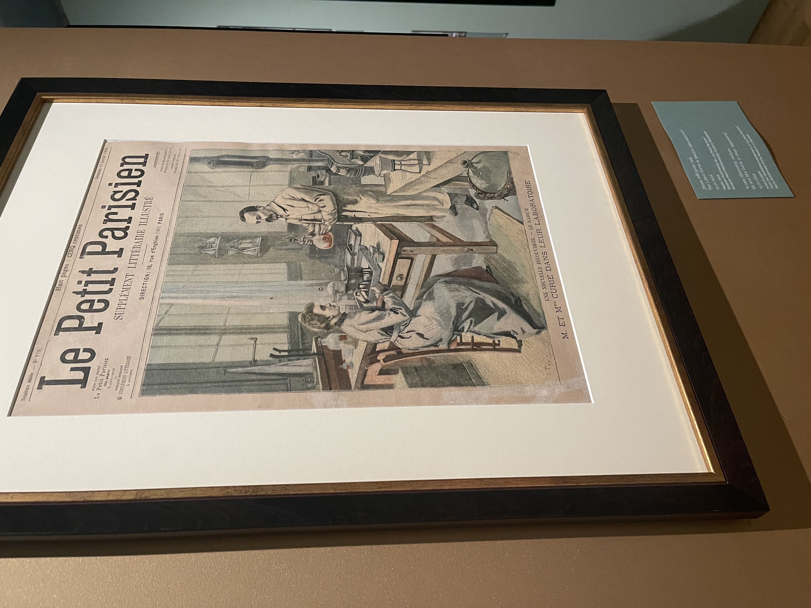
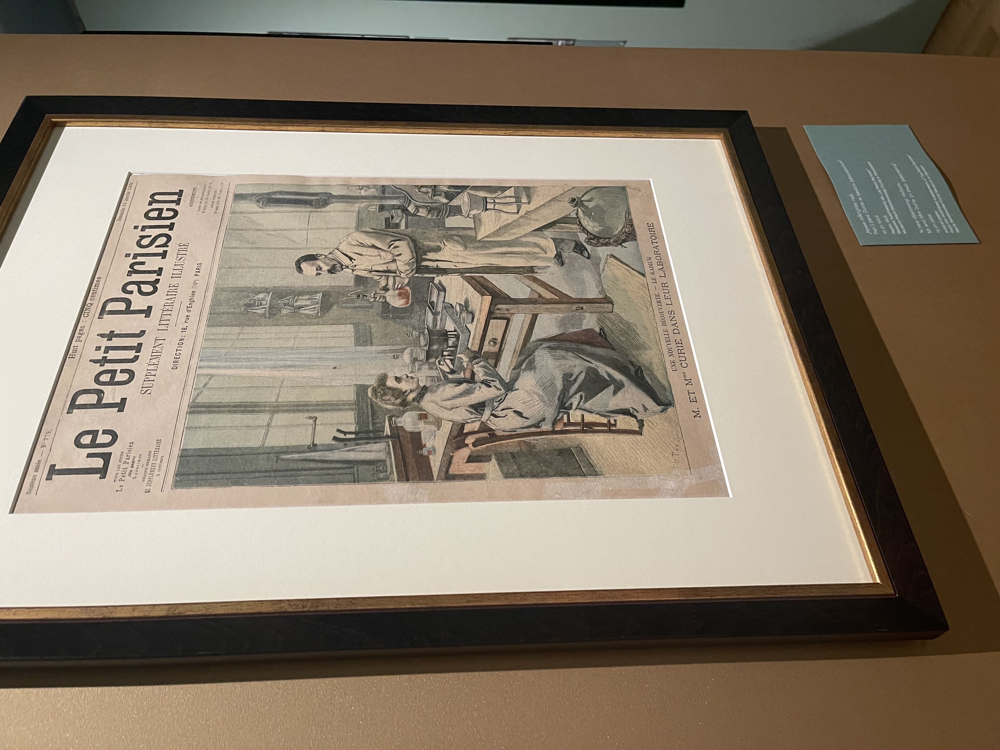

Posted July 22, 2025

Take a look at some of the amazing museums I got to visit during my summer in Warsaw!
Warsaw is an incredible city with a wealth of amazing museums, and in my time interning at POLIN Museum of the History of Polish Jews this summer, I had the opportunity to visit many of them. As a bit of a disclaimer, this photo diary will only feature the light-hearted museums I visited in Warsaw. This city has a rich and often tragic history, which I spent much of this summer studying. This blog doesn't feel like an appropriate place to explore the memory of Warsaw's tragedies, considering it's lighter tone. I also consider this blog a personal project and would like to keep the professional and academic work I did this summer largely separate. That being said, I absolutely recommend visiting some of the world-class history museums in Warsaw if you get the opportunity. Here are a few that I can personally recommend:
Now that that disclaimer is out of the way, here are some of the great museums Warsaw has to offer!
This is one of my new all-time favorite museums. Aside from my personal interest in the history of science, and aside from the excitement that comes with learning about a famous Varsovian while in Warsaw, Marie Curie was an exceptional scientist and a fascinating historical figure, making for a perfect museum subject. The exhibition was the perfect size and did an amazing job giving equal acknowledgment to her identities as a woman, scientist, and public figure, along with all the complex intersections of those identities. The exhibit humanized her while maintaining the enormity of her genius, and it shed light on the achievements of her daughters, about whom I knew very little. The temporary exhibition focused on Curie's daughter and her writing of her mother's most famous biography, which was a great complimentary topic to the main exhibit's content.

 



One of my favorite parts of the main exhibit's curation was the inclusion of clear partitions displaying pressed flowers. Upon first glance, I was confused by their presence. As it turns out, the flowers displayed were chosen for their symbolic meaning, as each virtue or emotion represented by the flowers correspondeded thematically to the point in Curie's life that was currently being discussed. For example, marigolds, which are meant to symbolize grief and sadness at the absence of another person, were placed in the section that described the untimely passing of Marie Curie's husband. This approach to curation is unique and incredibly compelling, and I found it to be a really meaningful, emotional addition to the flow of the exhibit.